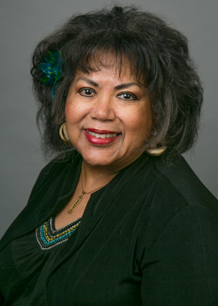

History of the Scholarship Program
The United Martin Family Scholarship Program was established by Professor Connie Perdreau in 1993 when she announced its inception at the UMF Reunion in Columbus, Ohio, on the occasion of its 25th Silver Anniversary, when she was the keynote speaker. The first scholarships were awarded in 1997. Since that time, more than $100,000 in scholarships have been awarded to over 100 undergraduate and graduate students in our family.
The program is open to UMF students who are descendants of Trasie, and are starting college or are enrolled in a graduate degree program in Medicine or Master’s in Business Administration, the latter being the Malverse Martin Sr. Graduate Scholarship.
Guidelines and Instructions
Eligibility
To be eligible for a scholarship, applicants must be able to trace their ancestry to one of the original Martin siblings whose mother was Katie and grandmother was Trasie.
In addition, applicants must satisfy additional criteria that is detailed in the applicable application linked in the Download Application section below.
Submission and Deadline
Submit a completed application and supporting documentation to Prof. Connie Perdreau via email at connie@perdreams.com by June 1st.
Selection & Notification
Scholarship winners will be selected by the United Martin Family Scholarship Committee after evaluating the eligibility requirements and the completed application packet. Award recipients will be notified by email prior to the annual United Martin Family Reunion.
Download Application
Click here to complete the fillable PDF UMF Undergraduate Scholarship application.
Click here to complete the fillable PDF UMF Malverse Martin Sr. Graduate Student Scholarship application.
UMF Scholarship Fund Donations
Please consider donating to the United Martin Family Scholarship Fund. Proceeds are used to assist Martin family members who seek to further their education.
You may donate online using one of the following methods:
- Cash App: $XXXXX.
- Venmo: @XXXXX
- Zelle: 111-555-1111 NAME
You may also donate via check or money order payable to the United Martin Family Scholarship Fund and mail to:
Prof. Connie Perdreau
122 Main Street, Apt 123
Anytown, NY 11111
Contact Connie Perdreau at connie@perdreams.com for more information.
Previous Martin Scholars
See below for a listing of all previous scholarship recipients who have benefited from your donations.